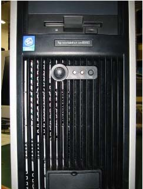
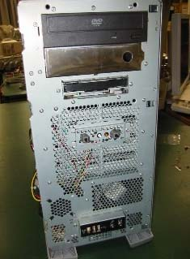
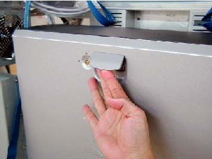
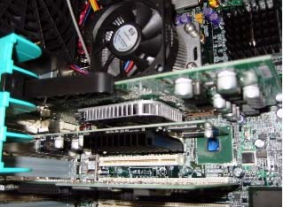
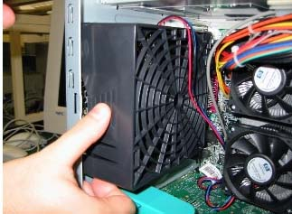
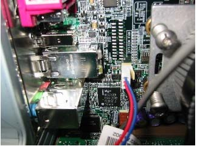
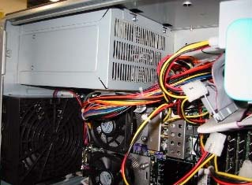
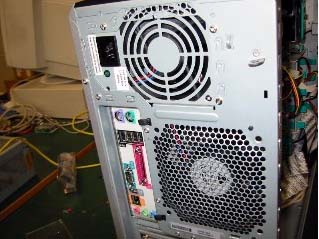

Operating Documentation
Direction 5133330-3, Rev# 14
Signa EXCITE HD 3.0T Service Methods
Module Version 2.0, Version Date 9/29/08
Operating Documentation |
| Required Persons | Preliminary Reqs | Procedure | Finalization |
|---|---|---|---|
| 1 | Not Applicable | Not Applicable | Not Applicable |
If there is a drift in time, time adjustment is required as follows:
Select [Service Desktop Manager]
Click [Guided Install] => [Start] and type operator for the Password.
When the Guided Install window displays, click [SET TIME/DATE].
Adjust the Time, Month, Date and Year.
Click [SET TIME/DATE ] at the bottom to reset with the changes.
Close the Guided Install window.
If required, remove unwanted T-test files by:
Accessing the Common Service Desktop, selecting [Utilities], and selecting T file clean-up.
Delete any unnecessary files.
To clean dust and debris from the PC, proceed as follows:
Remove the front panel (shown in Illustration 1) from the PC.
Illustration 1: Front of PC

To ensure the air intake (shown in Illustration 2) on the PC is free from dirt, remove any dust and debris using a vacuum cleaner.
Illustration 2: Front of PC with Cover Removed

Reassemble the front panel.
Locate a vacuum, put on the ESD wrist strap, and proceed as follows:
Open the side cover of the PC as shown in Illustration 3.
Illustration 3: PC Side Cover

With the vacuum, blow out any dust from the CPU heat sink and fan.
Blow out any dust from the video card (shown in Illustration 4), making sure to blow air down through the layers to remove dust.
Illustration 4: Video Card

To clean the chassis fan, remove by lifting and sliding it out as shown in Illustration 5.
Illustration 5: Chassis Fan

Disconnect the fan power line from the motherboard shown in Illustration 6.
Illustration 6: Motherboard

Vacuum the dust from the air intake of the power supply shown in Illustration 7.
Illustration 7: Power Supply

Clean the screen on the back of the PC shown in Illustration 8.
Illustration 8: Back of PC

No finalization steps.